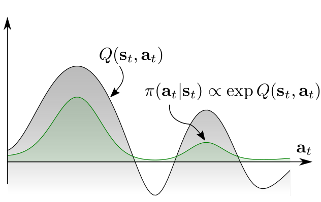
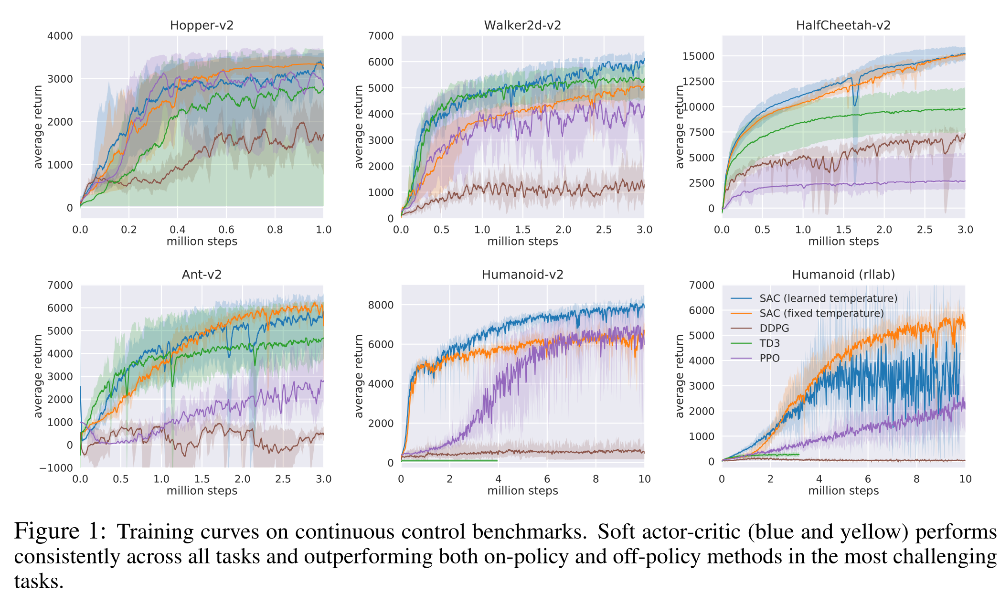

Maximum Entropy RL (SAC)
Soft RL
All methods seen so far search the optimal policy that maximizes the return:
\pi^* = \text{arg} \max_\pi \, \mathbb{E}_{\pi} [ \sum_t \gamma^t \, r(s_t, a_t, s_{t+1}) ]
The optimal policy is deterministic and greedy by definition.
\pi^*(s) = \text{arg} \max_a Q^*(s, a)
Exploration is ensured externally by :
- applying \epsilon-greedy or softmax on the Q-values (DQN),
- adding exploratory noise (DDPG),
- learning stochastic policies that become deterministic over time (A3C, PPO).
Is “hard” RL, caring only about exploitation, always the best option?
The optimal policy is only greedy for a MDP, not obligatorily for a POMDP. Games like chess are POMDPs: you do not know what your opponent is going to play (missing information). If you always play the same moves (e.g. opening moves), your opponent will adapt and you will end up losing systematically. Variety in playing is beneficial in POMDPs: it can counteract the uncertainty about the environment (Todorov, 2008), (Toussaint, 2009).
There are sometimes more than one way to collect rewards, especially with sparse rewards. If exploration decreases too soon, the RL agent will “overfit” one of the paths. If one of the paths is suddenly blocked, the agent would have to completely re-learn its policy. It would be more efficient if the agent had learned all possibles paths, even if some of them are less optimal.
Softmax policies allow to learn multimodal policies, but only for discrete action spaces.
\pi(s, a) = \frac{\exp Q(s, a) / \tau}{ \sum_b \exp Q(s, b) / \tau}
In continuous action spaces, we would have to integrate over the whole action space, what is not tractable. Exploratory noise as in DDPG only leads to unimodal policies: greedy action plus some noise.


Continuous stochastic policies
The easiest to implement a stochastic policy with a neural network is a Gaussian policy. Suppose that we want to control a robotic arm with n degrees of freedom. An action \mathbf{a} is a vector of joint displacements:
\mathbf{a} = \begin{bmatrix} \Delta \theta_1 & \Delta \theta_2 & \ldots \, \Delta \theta_n\end{bmatrix}^T
A Gaussian policy considers the vector \mathbf{a} to be sampled from the normal distribution \mathcal{N}(\mu_\theta(s), \sigma_\theta(s)). The mean \mu_\theta(s) and standard deviation \sigma_\theta(s) are vectors that can be the output of the actor neural network with parameters \theta. Sampling an action from the normal distribution is done through the reparameterization trick:
\mathbf{a} = \mu_\theta(s) + \sigma_\theta(s) \, \xi
where \xi \sim \mathcal{N}(0, 1) comes from the standard normal distribution.
The good thing with the normal distribution is that we know its pdf:
\pi_\theta(s, a) = \frac{1}{\sqrt{2\pi\sigma^2_\theta(s)}} \, \exp -\frac{(a - \mu_\theta(s))^2}{2\sigma^2_\theta(s)}
When estimating the policy gradient (REINFORCE, A3C, PPO, etc):
\nabla_\theta J(\theta) = \mathbb{E}_{s \sim \rho^\pi, a \sim \pi_\theta}[\nabla_\theta \log \pi_\theta (s, a) \, \psi ]
the log-likelihood \log \pi_\theta (s, a) is a simple function of \mu_\theta(s) and \sigma_\theta(s):
\log \pi_\theta (s, a) = -\frac{(a - \mu_\theta(s))^2}{2\sigma^2_\theta(s)} - \frac{1}{2} \, \log 2\pi\sigma^2_\theta(s)
so we can easily compute its gradient w.r.t \theta and apply backpropagation:
\nabla_{\mu_\theta(s)} \log \pi_\theta (s, a) = \frac{a - \mu_\theta(s)}{\sigma_\theta(s)^2} \qquad \nabla_{\sigma_\theta(s)} \log \pi_\theta (s, a) = \frac{(a - \mu_\theta(s))^2}{\sigma_\theta(s)^3} - \frac{1}{\sigma_\theta(s)}
A Gaussian policy samples actions from the normal distribution \mathcal{N}(\mu_\theta(s), \sigma_\theta(s)), with \mu_\theta(s) and \sigma_\theta(s) being the output of the actor.
\mathbf{a} = \mu_\theta(s) + \sigma_\theta(s) \, \xi
The score \nabla_\theta \log \pi_\theta (s, a) can be obtained easily using the output of the actor:
\nabla_{\mu_\theta(s)} \log \pi_\theta (s, a) = \frac{a - \mu_\theta(s)}{\sigma_\theta(s)^2}
\nabla_{\sigma_\theta(s)} \log \pi_\theta (s, a) = \frac{(a - \mu_\theta(s))^2}{\sigma_\theta(s)^3} - \frac{1}{\sigma_\theta(s)}
The rest of the score (\nabla_\theta \mu_\theta(s) and \nabla_\theta \sigma_\theta(s)) is the problem of tensorflow/pytorch. This is the same reparametrization trick used in variational autoencoders to allow backpropagation to work through a sampling operation. Beta distributions are an even better choice to parameterize stochastic policies (Chou et al., 2017).
Maximum Entropy RL
Although stochastic, Gaussian policies are still unimodal policies: they mostly sample actions around the mean \mu_\theta(s) and the variance \sigma_\theta(s) decreases to 0 with learning. If we want a multimodal policy that learns different solutions, we need to learn a Softmax distribution (Gibbs / Boltzmann) over the action space. How can we do that when the action space is continuous?
A solution to force the policy to be multimodal is to force it to be as stochastic as possible by maximizing its entropy. Instead of searching for the policy that “only” maximizes the returns:
\pi^* = \text{arg} \max_\pi \, \mathbb{E}_{\pi} [ \sum_t \gamma^t \, r(s_t, a_t, s_{t+1}) ]
we search for the policy that maximizes the returns while being as stochastic as possible:
\pi^* = \text{arg} \max_\pi \, \mathbb{E}_{\pi} [ \sum_t \gamma^t \, r(s_t, a_t, s_{t+1}) + \alpha \, H(\pi(s_t))]
This new objective function defines the maximum entropy RL framework (Williams and Peng, 1991). The entropy of the policy regularizes the objective function: the policy should still maximize the returns, but stay as stochastic as possible depending on the parameter \alpha. Entropy regularization can always be added to PG methods such as A3C. It is always possible to fall back to hard RL by setting \alpha to 0.
The entropy of a policy in a state s_t is defined by the expected negative log-likelihood of the policy:
H(\pi_\theta(s_t)) = \mathbb{E}_{a \sim \pi_\theta(s_t)} [- \log \pi_\theta(s_t, a)]
For a discrete action space:
H(\pi_\theta(s_t)) = - \sum_a \pi_\theta(s_t, a) \, \log \pi_\theta(s_t, a)
For a continuous action space:
H(\pi_\theta(s_t)) = - \int_a \pi_\theta(s_t, a) \, \log \pi_\theta(s_t, a) \, da
The entropy necessitates to sum or integrate the self-information of each possible action in a given state. A deterministic (greedy) policy has zero entropy, the same action is always taken: exploitation. A random policy has a high entropy, you cannot predict which action will be taken: exploration. Maximum entropy RL embeds the exploration-exploitation trade-off inside the objective function instead of relying on external mechanisms such as the softmax temperature.
In soft Q-learning (Haarnoja et al., 2017), the objective function is defined over complete trajectories:
\mathcal{J}(\theta) = \sum_t \gamma^t \, \mathbb{E}_{\pi} [ r(s_t, a_t, s_{t+1}) + \alpha \, H(\pi(s_t))]
The goal of the agent is to generate trajectories associated with a lot of rewards (high return) but only visiting states with a high entropy, i.e. where the policy is random (exploration).
The agent can decide how the trade-off is solved via regularization:
- If a single action leads to high rewards, the policy may become deterministic.
- If several actions lead to equivalent rewards, the policy must stay stochastic.
In soft Q-learning, the policy is implemented as a softmax over soft Q-values:
\pi_\theta(s, a) = \dfrac{\exp \dfrac{Q^\text{soft}_\theta (s, a)}{\alpha}}{\sum_b \exp \dfrac{Q^\text{soft}_\theta (s, b)}{\alpha}} \propto \exp \dfrac{Q^\text{soft}_\theta (s, a)}{\alpha}
\alpha plays the role of the softmax temperature parameter \tau.
Soft Q-learning belongs to energy-based models, as -\dfrac{Q^\text{soft}_\theta (s, a)}{\alpha} represents the energy of the Boltzmann distribution (see restricted Boltzmann machines). The partition function \sum_b \exp \dfrac{Q^\text{soft}_\theta (s, b)}{\alpha} is untractable for continuous action spaces, as one would need to integrate over the whole action space, but it will disappear from the equations anyway.
Soft V and Q values are the equivalent of the hard value functions, but for the new objective:
\mathcal{J}(\theta) = \sum_t \gamma^t \, \mathbb{E}_{\pi} [ r(s_t, a_t, s_{t+1}) + \alpha \, H(\pi(s_t))]
The soft value of an action depends on the immediate reward and the soft value of the next state (soft Bellman equation):
Q^\text{soft}_\theta(s_t, a_t) = \mathbb{E}_{s_{t+1} \in \rho_\theta} [r(s_t, a_t, s_{t+1}) + \gamma \, V^\text{soft}_\theta(s_{t+1})]
The soft value of a state is the expected value over the available actions plus the entropy of the policy.
V^\text{soft}_\theta(s_t) = \mathbb{E}_{a_{t} \in \pi} [Q^\text{soft}_\theta(s_{t}, a_{t})] + H(\pi_\theta(s_t)) = \mathbb{E}_{a_{t} \in \pi} [Q^\text{soft}_\theta(s_{t}, a_{t}) - \log \, \pi_\theta(s_t, a_t)]
(Haarnoja et al., 2017) showed that these soft value functions are the solution of the entropy-regularized objective function. All we need is to be able to estimate them… Soft Q-learning uses complex optimization methods (variational inference) to do it, but SAC is more practical.
Soft Actor-Critic (SAC)
Putting:
Q^\text{soft}_\theta(s_t, a_t) = \mathbb{E}_{s_{t+1} \in \rho_\theta} [r(s_t, a_t, s_{t+1}) + \gamma \, V^\text{soft}_\theta(s_{t+1})]
and:
V^\text{soft}_\theta(s_t) = \mathbb{E}_{a_{t} \in \pi} [Q^\text{soft}_\theta(s_{t}, a_{t}) - \log \, \pi_\theta(s_t, a_t)]
together, we obtain:
Q^\text{soft}_\theta(s_t, a_t) = \mathbb{E}_{s_{t+1} \in \rho_\theta} [r(s_t, a_t, s_{t+1}) + \gamma \, \mathbb{E}_{a_{t+1} \in \pi} [Q^\text{soft}_\theta(s_{t+1}, a_{t+1}) - \log \, \pi_\theta(s_{t+1}, a_{t+1})]]
If we want to train a critic Q_\varphi(s, a) to estimate the true soft Q-value of an action Q^\text{soft}_\theta(s, a), we just need to sample (s_t, a_t, r_{t+1}, a_{t+1}) transitions and minimize:
\mathcal{L}(\varphi) = \mathbb{E}_{s_t, a_t, s_{t+1} \sim \rho_\theta} [(r_{t+1} + \gamma \, Q_\varphi(s_{t+1}, a_{t+1}) - \log \pi_\theta(s_{t+1}, a_{t+1}) - Q_\varphi(s_{t}, a_{t}) )^2]
The only difference with a SARSA critic is that the negative log-likelihood of the next action is added to the target. In practice, s_t, a_t and r_{t+1} can come from a replay buffer, but a_{t+1} has to be sampled from the current policy \pi_\theta (but not taken!). SAC (Haarnoja et al., 2018) is therefore an off-policy actor-critic algorithm, but with stochastic policies!
But how do we train the actor? The policy is defined by a softmax over the soft Q-values, but the log-partition Z is untractable for continuous spaces:
\pi_\theta(s, a) = \dfrac{\exp \dfrac{Q_\varphi (s, a)}{\alpha}}{\sum_b \exp \dfrac{Q_\varphi (s, b)}{\alpha}} = \dfrac{1}{Z} \, \exp \dfrac{Q_\varphi (s, a)}{\alpha}
The trick is to make the parameterized actor \pi_\theta learn to be close from this softmax, by minimizing the KL divergence:
\mathcal{L}(\theta) = D_\text{KL} (\pi_\theta(s, a) || \dfrac{1}{Z} \, \exp \dfrac{Q_\varphi (s, a)}{\alpha}) = \mathbb{E}_{s, a \sim \pi_\theta(s, a)} [- \log \dfrac{\dfrac{1}{Z} \, \exp \dfrac{Q_\varphi (s, a)}{\alpha}}{\pi_\theta(s, a)}]
As Z does not depend on \theta, it will automagically disappear when taking the gradient!
\nabla_\theta \, \mathcal{L}(\theta) = \mathbb{E}_{s, a} [\alpha \, \nabla_\theta \log \pi_\theta(s, a) - Q_\varphi (s, a)]
So the actor just has to implement a Gaussian policy and we can train it using soft-Q-value.
Soft Actor-Critic (SAC) is an off-policy actor-critic architecture for maximum entropy RL:
\mathcal{J}(\theta) = \sum_t \gamma^t \, \mathbb{E}_{\pi} [ r(s_t, a_t, s_{t+1}) + \alpha \, H(\pi(s_t))]
Maximizing the entropy of the policy ensures an efficient exploration. It is even possible to learn the value of the parameter \alpha. The critic learns to estimate soft Q-values that take the entropy of the policy into account:
\mathcal{L}(\varphi) = \mathbb{E}_{s_t, a_t, s_{t+1} \sim \rho_\theta} [(r_{t+1} + \gamma \, Q_\varphi(s_{t+1}, a_{t+1}) - \log \pi_\theta(s_{t+1}, a_{t+1}) - Q_\varphi(s_{t}, a_{t}) )^2]
The actor learns a Gaussian policy that becomes close to a softmax over the soft Q-values:
\pi_\theta(s, a) \propto \exp \dfrac{Q_\varphi (s, a)}{\alpha}
\nabla_\theta \, \mathcal{L}(\theta) = \mathbb{E}_{s, a} [\alpha \, \nabla_\theta \log \pi_\theta(s, a) - Q_\varphi (s, a)]
In practice, SAC uses clipped double learning like TD3: it takes the lesser of two evils between two critics Q_{\varphi_1} and Q_{\varphi_2}. The next action a_{t+1} comes from the current policy, no need for target networks. Unlike TD3, the learned policy is stochastic: no need for target noise as the targets are already stochastic. See https://spinningup.openai.com/en/latest/algorithms/sac.html for a detailed comparison of SAC and TD3. The initial version of SAV additionally learned a soft V-value critic, but this turns out not to be needed.

The enhanced exploration strategy through maximum entropy RL allows to learn robust and varied strategies that can cope with changes in the environment.


The low sample complexity of SAC allows to train a real-world robot in less than 2 hours!
Although trained on a flat surface, the rich learned stochastic policy can generalize to complex terrains.
When trained to stack lego bricks, the robotic arm learns to explore the whole state-action space.

This makes it more robust to external perturbations after training: